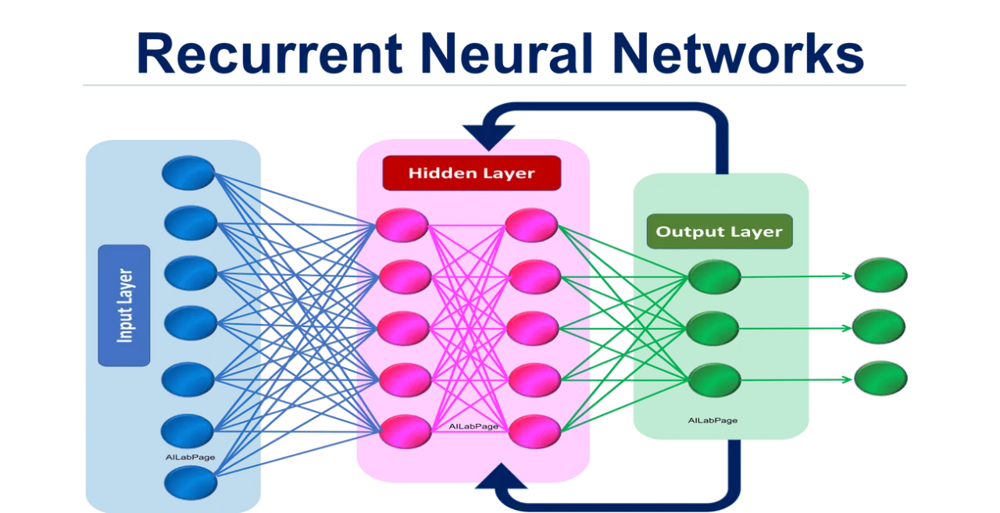
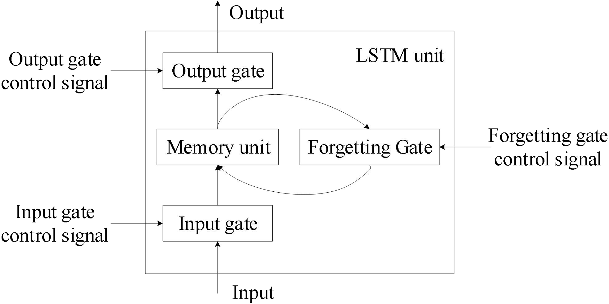
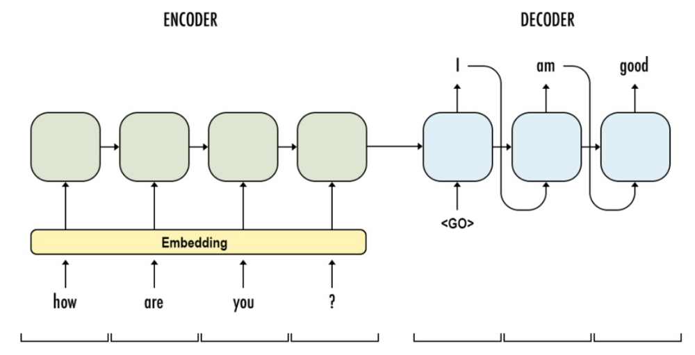
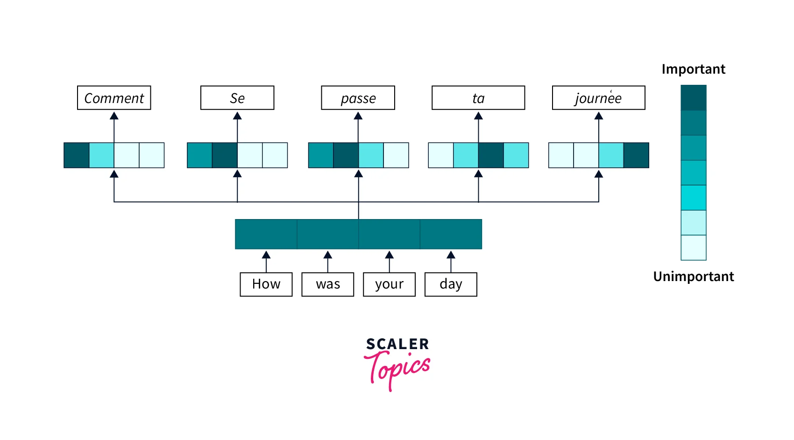
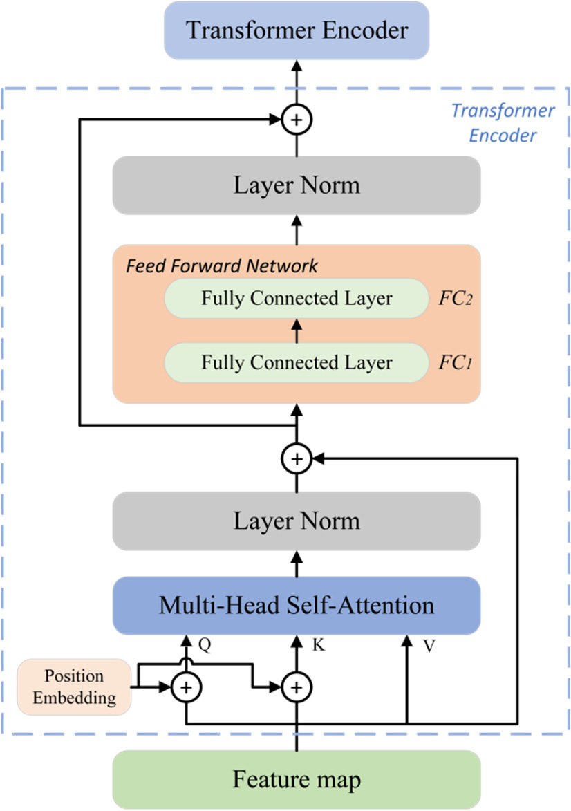
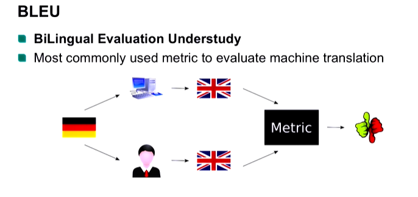

iPAS AI應用規劃師 考試重點
L21101 自然語言處理技術與應用
主題分類
1
NLP 基本概念與定義
2
核心文本前處理技術
3
關鍵 NLP 模型與演算法
4
詞彙表達與語意理解
5
主要 NLP 應用場景
6
序列模型與 Transformer 架構
7
NLP 系統評估與挑戰
8
NLP 工具與整合應用
#1
★★★★★
Natural Language Processing (NLP) - 基本定義
核心概念
Natural Language Processing (NLP) 是人工智慧 (AI) 和語言學領域的分支，專注於賦予電腦理解、解釋和生成人類語言的能力。其目標是縮小人類自然語言與電腦形式語言之間的差距，使人機互動更自然、更有效率。主要涉及兩個核心任務：Natural Language Understanding (NLU) 和 Natural Language Generation (NLG)。

#2
★★★★
Natural Language Understanding (NLU) vs. Natural Language Generation (NLG)
主要區別
- NLU (自然語言理解): 著重於讓電腦讀懂人類語言，提取意義、意圖和結構。例如：從句子中識別實體、判斷情感、理解指令。
- NLG (自然語言生成): 著重於讓電腦以自然、流暢、符合語法的方式產生人類語言。例如：自動撰寫新聞摘要、生成對話回覆、產生產品描述。
#3
★★★★★
文本前處理 (Text Preprocessing) - 重要性
目的與意義
文本前處理是 NLP 任務的基礎且關鍵步驟。原始文本通常包含雜訊、不一致性和冗餘訊息，直接輸入模型效果不佳。前處理旨在：
- 清理文本：去除標點符號、特殊字元、HTML標籤等。
- 標準化文本：轉換大小寫、處理縮寫、統一格式。
- 減少維度：去除停用詞、詞幹提取/詞形還原。
- 結構化文本：進行斷詞、詞性標註。
#4
★★★★★
斷詞 (Tokenization)
核心技術
斷詞是將連續的文本流（句子、段落）分割成有意義的最小單元，稱為詞元 (Token)。這些詞元通常是單詞、數字或標點符號。這是大多數NLP任務的第一步。
- 英文斷詞相對簡單，主要依賴空格和標點。
- 中文斷詞更複雜，因為詞語間沒有明顯分隔符，需要依賴詞典或統計模型來識別詞界。常見方法包括：基於詞典的最大匹配法、基於統計的隱馬可夫模型(HMM)、條件隨機場(CRF)等。

#5
★★★★
停用詞移除 (Stop Word Removal)
概念與應用
停用詞是指語言中出現頻率高但通常不攜帶太多實際語意的詞語，例如 "的"、"是"、"在" (中文) 或 "the"、"a"、"is" (英文)。
在某些 NLP 任務中（如資訊檢索、文本分類），移除停用詞可以：
- 減少數據維度，降低計算複雜度。
- 凸顯更具訊息量的關鍵詞。

#6
★★★★
詞幹提取 (Stemming) vs. 詞形還原 (Lemmatization)
目的與區別
兩者都是將詞語的不同屈折形式還原為其基本或詞典形式，以減少詞彙量。
- 詞幹提取 (Stemming): 使用啟發式規則去除詞語的後綴（有時是前綴），將詞語縮減為其詞幹 (Stem)。速度快，但結果可能不是一個有效的詞 (e.g., "studies" -> "studi")。
- 詞形還原 (Lemmatization): 考慮詞語的詞性 (POS) 和上下文，利用詞典將詞語還原為其詞元或基本形式 (Lemma)。結果更準確，是一個有效的詞 (e.g., "studies" -> "study")，但計算成本更高。

#7
★★★★★
詞袋模型 (Bag-of-Words, BoW)
基本概念
BoW 是一種簡化的文本表示方法。它將一段文本（如句子或文件）表示為一個無序的詞語集合（詞袋），忽略文法和詞語順序，只關注詞語的出現頻率。
- 步驟：1. 建立詞彙表(Vocabulary)。 2. 計算每個詞在文本中出現的次數。 3. 將文本表示為一個向量，向量的維度是詞彙表大小，每個維度的值是對應詞語的頻率（或其他權重，如TF-IDF）。
- 優點：簡單、易於實現。
- 缺點：丟失了詞語順序和語法結構訊息，無法捕捉語意關聯。
#8
★★★★★
TF-IDF (Term Frequency-Inverse Document Frequency)
概念與計算
TF-IDF 是一種常用的詞語權重計算方法，用於評估一個詞語對於一份文件集或一個語料庫中的某份文件的重要程度。
- TF (詞頻, Term Frequency): 一個詞語在單個文件中出現的頻率。TF越高，表示該詞在該文件中越重要。
- IDF (逆向文件頻率, Inverse Document Frequency): 衡量一個詞語在整個文件集中的普遍程度。計算方式通常是 `log(總文件數 / 包含該詞的文件數)`。如果一個詞在很多文件中都出現，其IDF值會較低，表示其區分度不高。
- TF-IDF = TF * IDF。一個詞的TF-IDF值越高，表示它在該文件中既常出現，又在整個文件集中不普遍，因此更能代表該文件的關鍵特徵。

#9
★★★★★
詞向量 / 詞嵌入 (Word Embedding)
核心思想
詞向量是將詞語映射到一個低維、連續的向量空間中的技術。其核心思想是：語意相近的詞語在向量空間中的距離也應該相近。
與 BoW 或 TF-IDF 不同，詞向量能夠捕捉詞語之間的語意關係（如同義詞、反義詞、類比關係）。
常見的詞向量模型包括：
- Word2Vec (CBOW, Skip-gram)
- GloVe (Global Vectors for Word Representation)
- FastText

#10
★★★★
Word2Vec (CBOW vs. Skip-gram)
模型架構
Word2Vec 是生成詞向量的代表性模型，包含兩種主要架構：
- CBOW (Continuous Bag-of-Words): 根據上下文詞語來預測中心詞語。訓練速度較快，對於高頻詞效果較好。
- Skip-gram: 根據中心詞語來預測其上下文詞語。訓練速度較慢，但對於低頻詞和捕捉複雜語意關係效果更好。

#11
★★★★★
情感分析 (Sentiment Analysis) / 意見探勘 (Opinion Mining)
主要應用
情感分析旨在識別和提取文本中所表達的情感傾向（如：正面、負面、中性）或主觀意見。
主要應用場景包括：
- 產品/服務評論分析：了解用戶滿意度。
- 品牌聲譽監控：追蹤公眾對品牌的看法。
- 市場趨勢分析：分析消費者對市場事件的情感反應。
- 社交媒體監控：了解輿情動態。

#12
★★★★★
文本分類 (Text Classification)
核心任務
文本分類是將文本文件分配到預定義的類別中的過程。這是 NLP 中最基本和廣泛應用的任務之一。
常見應用：
- 垃圾郵件檢測：分類郵件為垃圾郵件或非垃圾郵件。
- 新聞主題分類：將新聞文章分類到體育、政治、科技等類別。
- 情感分析（也可視為一種文本分類）：將評論分類為正面、負面或中性。
- 意圖識別：在聊天機器人中，將用戶輸入分類到不同的意圖（如查詢天氣、播放音樂）。

#13
★★★★
命名實體識別 (Named Entity Recognition, NER)
任務目標
NER 的目標是從非結構化文本中定位並分類預先定義的命名實體。常見的實體類別包括：
- 人名 (Person, PER)
- 組織機構名 (Organization, ORG)
- 地名 (Location, LOC / GPE)
- 日期 (Date) / 時間 (Time)
- 貨幣 (Money) / 百分比 (Percent)
#14
★★★★
機器翻譯 (Machine Translation, MT)
發展歷程
MT 是利用電腦自動將一種自然語言（源語言）翻譯成另一種自然語言（目標語言）的技術。
主要發展階段：
- 基於規則的機器翻譯 (Rule-based Machine Translation, RBMT): 依賴人工編寫的雙語詞典和語法規則。
- 統計機器翻譯 (Statistical Machine Translation, SMT): 從大量平行語料庫中學習翻譯模式，代表模型是基於短語的模型 (Phrase-Based MT)。
- 神經機器翻譯 (Neural Machine Translation, NMT): 使用深度學習模型（主要是基於RNN的Sequence-to-Sequence模型和Transformer模型）進行端到端的翻譯，是目前的主流方法，翻譯品質顯著提升。
#15
★★★★★
問答系統 (Question Answering, QA) 與 聊天機器人 (Chatbot)
互動式應用
- 問答系統 (QA): 旨在根據用戶提出的自然語言問題，從知識庫、文件集或網路中找到或生成精確答案。
- 聊天機器人 (Chatbot): 能夠與用戶進行多輪自然語言對話的系統。可以是任務導向（如訂票、客服）或開放領域閒聊。
#16
★★★★
遞迴神經網路 (Recurrent Neural Network, RNN)
序列處理模型
RNN 是一類專門設計用於處理序列數據（如文本、時間序列）的神經網路。其核心特點是網路中存在循環連接，允許訊息在序列的不同時間步之間傳遞和持續存在（具有記憶性）。
- 基本 RNN 在處理長序列時容易出現梯度消失 (Vanishing Gradient) 或梯度爆炸 (Exploding Gradient) 問題。

#17
★★★★★
LSTM (Long Short-Term Memory) 與 GRU (Gated Recurrent Unit)
改進的RNN變體
LSTM 和 GRU 是 RNN 的特殊變體，旨在解決梯度消失/爆炸問題，從而更好地捕捉序列中的長期依賴關係。
- LSTM: 引入了輸入門、遺忘門、輸出門和一個細胞狀態 (Cell State) 來控制訊息的流動和保留。
- GRU: 是 LSTM 的簡化版本，合併了輸入門和遺忘門為更新門，並引入了重置門。結構更簡單，參數更少，訓練可能更快。


#18
★★★★★
序列到序列模型 (Sequence-to-Sequence, Seq2Seq)
模型架構
Seq2Seq 模型是一種端到端的深度學習架構，用於處理輸入和輸出都是序列的任務。它通常由兩部分組成：
- 編碼器 (Encoder): 讀取輸入序列，並將其壓縮成一個固定長度的上下文向量 (Context Vector) 或一系列隱藏狀態，捕捉輸入序列的訊息。通常使用 RNN, LSTM 或 GRU。
- 解碼器 (Decoder): 接收編碼器的輸出（上下文向量/隱藏狀態），並逐步生成目標輸出序列。也常使用 RNN, LSTM 或 GRU。

#19
★★★★★
注意力機制 (Attention Mechanism)
核心作用
注意力機制是對 Seq2Seq 模型的重要改進。傳統 Seq2Seq 將整個輸入序列壓縮成單一固定長度的上下文向量，這可能成為長序列處理的瓶頸。
注意力機制允許解碼器在生成每個輸出詞元時，能夠動態地、有選擇性地關注輸入序列的不同部分（給予不同的注意力權重）。
- 優點：有效處理長序列，提升翻譯/生成品質，提供一定的可解釋性（可視化注意力權重）。
- 是 Transformer 模型的核心組件之一。

#20
★★★★★
Transformer 模型架構
架構特點
Transformer 是由 Google 在 2017 年論文 "Attention Is All You Need" 中提出的模型架構，已成為現代 NLP 的基石。
其核心特點：
- 完全基於注意力機制：摒棄了傳統的 RNN/ CNN 結構，僅使用自注意力 (Self-Attention) 和交叉注意力 (Cross-Attention)。
- 自注意力機制 (Self-Attention): 允許模型在處理一個詞時，同時考慮到序列中所有其他詞的影響，有效捕捉長距離依賴。
- 並行計算能力強：相比 RNN 的順序計算，Transformer 的自注意力可以並行計算，大大提升訓練速度。
- 位置編碼 (Positional Encoding): 由於沒有遞迴結構，需要額外加入位置編碼來表示詞語在序列中的位置訊息。
- 多頭注意力 (Multi-Head Attention): 將注意力計算分散到多個子空間進行，捕捉不同方面的依賴關係。

#21
★★★★★
BERT (Bidirectional Encoder Representations from Transformers)
預訓練語言模型
BERT 是基於 Transformer 編碼器 (Encoder) 的預訓練語言模型 (Pre-trained Language Model, PLM)。
主要特點：
- 雙向性：通過遮罩語言模型 (Masked Language Model, MLM) 任務，讓模型在預測被遮罩的詞時能夠同時考慮其左右兩側的上下文。
- 下一句預測 (Next Sentence Prediction, NSP): 預訓練任務之一，判斷兩個句子是否是原文中連續的句子，幫助模型理解句子間關係。
- 遷移學習：在大規模無標註文本上預訓練後，可以在各種下游 NLP 任務（如分類、NER、問答）上進行微調 (Fine-tuning)，通常只需少量標註數據就能取得很好的效果。

#22
★★★★★
GPT (Generative Pre-trained Transformer) 系列
生成式預訓練模型
GPT 系列是由 OpenAI 開發的基於 Transformer 解碼器 (Decoder) 的生成式預訓練語言模型。
主要特點：
- 單向性：模型在預測下一個詞時，只能看到前面的詞（自迴歸模式, Autoregressive），特別適合文本生成任務。
- 大規模預訓練：在極大規模的文本數據上進行預訓練，學習廣泛的語言知識和模式。
- 少樣本/零樣本學習能力 (Few-shot/Zero-shot Learning): 大型 GPT 模型（如 GPT-3, GPT-4）展現出強大的少樣本甚至零樣本學習能力，即在沒有或只有少量示例的情況下完成新任務。
#23
★★★★
NLP 模型評估指標 (Evaluation Metrics) - 分類任務
常用指標
對於文本分類、情感分析等任務，常用評估指標包括：
- 準確率 (Accuracy): 預測正確的樣本數 / 總樣本數。在數據類別不平衡時可能具誤導性。
- 精確率 (Precision): 預測為正類的樣本中，實際為正類的比例 (TP / (TP + FP))。衡量預測的準確性。
- 召回率 (Recall) / 敏感度 (Sensitivity): 實際為正類的樣本中，被正確預測為正類的比例 (TP / (TP + FN))。衡量模型的查全率。
- F1 分數 (F1-Score): 精確率和召回率的調和平均數 (2 * Precision * Recall / (Precision + Recall))。綜合考慮兩者。
- 混淆矩陣 (Confusion Matrix): 詳細展示各類別的預測情況 (TP, FP, TN, FN)。
- AUC-ROC: ROC曲線下的面積，衡量模型的整體分類性能。


#24
★★★
NLP 模型評估指標 (Evaluation Metrics) - 生成任務
常用指標
對於機器翻譯、文本摘要等生成任務，常用評估指標包括：
- BLEU (Bilingual Evaluation Understudy): 主要用於機器翻譯。比較機器翻譯結果與人工參考翻譯之間的 n-gram (通常1到4) 匹配程度，並加入簡潔懲罰 (Brevity Penalty)。
- ROUGE (Recall-Oriented Understudy for Gisting Evaluation): 主要用於文本摘要。比較機器生成摘要與人工參考摘要之間的n-gram、最長公共子序列 (LCS) 等的召回率。
- 困惑度 (Perplexity, PPL): 衡量語言模型預測測試集的好壞，值越低表示模型性能越好。
- 人工評估 (Human Evaluation): 評估生成文本的流暢度、相關性、準確性等，通常是最可靠但成本最高的方法。

#25
★★★★
NLP 面臨的挑戰 (Challenges)
主要困難
自然語言處理充滿挑戰，主要包括：
- 歧義性 (Ambiguity): 詞彙（一詞多義）、句法（結構歧義）、語意（指代不清）等層面都存在歧義。
- 上下文依賴 (Context Dependence): 詞語或句子的意義高度依賴其上下文環境。
- 語言的多樣性與演化：方言、俚語、新詞、拼寫錯誤、語法不規範等。
- 常識與世界知識 (Common Sense & World Knowledge): 理解語言深層含義需要大量的背景知識。
- 數據稀疏性 (Data Sparsity): 許多詞語或模式在語料庫中出現次數很少。
- 模型偏見 (Bias): 訓練數據中存在的偏見可能被模型學習和放大。
- 可解釋性 (Interpretability): 複雜模型（如深度學習）的決策過程難以解釋。
#26
★★★
常用 NLP 工具庫 (Libraries)
開發工具
一些常用的 Python NLP 工具庫：
- NLTK (Natural Language Toolkit): 學術界常用，功能全面，包含大量語料庫和基礎算法。
- spaCy: 專為工業級應用設計，性能優越，提供預訓練模型，易於集成。
- Gensim: 專注於主題模型 (Topic Modeling) 和詞向量訓練。
- Scikit-learn: 包含許多傳統機器學習算法，可用於文本分類等任務（常結合TF-IDF）。
- Transformers (Hugging Face): 提供了大量預訓練的 Transformer 模型（如 BERT, GPT）及相應的工具，是當前深度學習 NLP 的主流庫。
- Jieba (結巴): 流行的中文斷詞工具庫。
#27
★★★★
NLP 與其他 AI 領域的整合
跨領域應用
NLP 經常與其他 AI 領域結合，產生更強大的應用：
- NLP + 電腦視覺 (CV): 圖像描述生成 (Image Captioning), 視覺問答 (VQA)。
- NLP + 語音處理 (Speech Processing): 語音識別 (ASR - 語音轉文字), 語音合成 (TTS - 文字轉語音)。
- NLP + 資訊檢索 (IR): 語意搜索、問答系統。
- NLP + 數據挖掘 (Data Mining): 文本挖掘 (Text Mining)，從大量文本中發現模式和知識。
- NLP + 推薦系統 (Recommender Systems): 利用用戶評論或內容描述進行推薦。
#28
★★★★
文本摘要 (Text Summarization)
任務類型
文本摘要旨在從原始文本中生成一個簡短、精煉的版本，同時保留核心訊息。主要分為兩類：
- 抽取式摘要 (Extractive Summarization): 直接從原文中選擇重要的句子或短語組合而成。方法相對簡單，保證語法正確性，但可能缺乏連貫性。
- 生成式摘要 (Abstractive Summarization): 理解原文語意後，用模型自己的話重新組織和生成摘要。可能產生更流暢、更自然的摘要，甚至包含原文未直接出現的詞語，但技術難度更高，可能產生事實錯誤 (Hallucination)。Seq2Seq 和 Transformer 模型常用於此。

#29
★★★
主題模型 (Topic Modeling)
核心目標
主題模型是一種無監督學習技術，用於從大量文檔集合中自動發現潛在的主題結構。它假設每篇文檔由多個主題混合而成，每個主題又由一系列相關的詞語表示。
- 代表性模型：Latent Dirichlet Allocation (LDA)。
- 應用：文本聚類、文檔瀏覽、內容推薦、理解大規模文本數據的內容結構。

#30
★★★★
詞性標註 (Part-of-Speech Tagging, POS Tagging)
任務定義
POS Tagging 是為句子中的每個詞語分配其對應的詞性標籤（如：名詞、動詞、形容詞、副詞等）的過程。
- 作用：理解句子結構、消除詞彙歧義（如 "book" 可以是名詞或動詞）、作為後續語法分析 (Parsing) 或資訊提取任務的基礎。
- 常用方法：基於規則、基於統計（如HMM, CRF）、基於深度學習（如BiLSTM-CRF）。

#31
★★★
N-gram 模型
統計語言模型
N-gram 是一種基於統計的語言模型 (Language Model, LM)。它假設一個詞的出現機率只與其前面的 N-1 個詞相關（馬可夫假設）。
- Unigram (N=1): 詞語獨立出現。
- Bigram (N=2): 詞語出現只與前一個詞相關。
- Trigram (N=3): 詞語出現與前兩個詞相關。

#32
★★★★
資訊提取 (Information Extraction, IE)
目標與技術
IE 的目標是從非結構化或半結構化文本中自動提取結構化的訊息。
主要子任務包括：
- 命名實體識別 (NER): 提取人名、地名、組織名等。
- 關係提取 (Relation Extraction): 識別實體之間的語意關係（如：某人工作於某公司）。
- 事件提取 (Event Extraction): 識別文本中描述的事件及其參與者、時間、地點等要素。

#33
★★★
條件隨機場 (Conditional Random Field, CRF)
序列標註模型
CRF 是一種判別式的概率圖模型，常用於序列標註 (Sequence Labeling) 任務，如 POS Tagging 和 NER。
與隱馬可夫模型 (HMM) 不同，CRF 直接對給定觀測序列下的標籤序列進行建模，可以考慮整個觀測序列的全局特徵，而不僅僅是局部特徵。它克服了 HMM 的條件獨立性假設的限制，通常能獲得更好的性能。
線性鏈 CRF 是最常見的類型。

#34
★★★★
遷移學習 (Transfer Learning) 在 NLP 中的應用
核心思想
遷移學習是指將在一個任務（源任務）上學到的知識應用到另一個相關任務（目標任務）上的技術。在 NLP 中，這通常指：
- 使用預訓練的詞向量（如 Word2Vec, GloVe）作為下游任務的輸入特徵。
- 使用預訓練的語言模型（如 BERT, GPT）作為基礎，然後在特定的下游任務數據上進行微調 (Fine-tuning)。
#35
★★★
NLP 層次結構 (Levels of NLP)
不同分析層面
NLP 任務可以大致分為不同的分析層次：
- 形態學分析 (Morphological Analysis): 分析詞語的內部結構（詞根、詞綴）。
- 詞彙分析 (Lexical Analysis): 斷詞、詞性標註、命名實體識別等。
- 句法分析 (Syntactic Analysis / Parsing): 分析句子的語法結構，如構建句法樹。
- 語意分析 (Semantic Analysis): 理解詞語和句子的意義，如詞義消歧 (WSD)、語意角色標註 (SRL)。
- 語用分析 (Pragmatic Analysis): 理解語言在特定語境下的意圖和含義，如指代消解、對話理解。
#36
★★★
語法分析 / 句法剖析 (Parsing)
結構分析
語法分析的目標是確定句子的語法結構，通常以語法樹的形式表示。主要有兩種類型：
- 成分句法分析 (Constituency Parsing): 將句子分解成嵌套的短語結構（如名詞短語 NP, 動詞短語 VP）。
- 依存句法分析 (Dependency Parsing): 識別詞語之間的依存關係（如主謂關係、動賓關係），表示為一個有向圖。

#37
★★★★
大型語言模型 (Large Language Model, LLM) 的幻覺 (Hallucination)
問題與挑戰
幻覺是指 LLM 生成看似合理但實際上是錯誤的、不真實的或與來源訊息不符的內容的現象。
- 原因可能包括：訓練數據中的噪聲或偏見、模型過度自信、對知識的內化不完全等。
- 這是 LLM 應用中的一個關鍵挑戰，尤其是在需要高事實準確性的場景（如醫療、金融）。
- 緩解方法：改進訓練數據、引入外部知識庫、增強事實核查機制、調整解碼策略（如降低 temperature）、提示工程 (Prompt Engineering)。
#38
★★★★
提示工程 (Prompt Engineering)
與LLM互動
提示工程是指設計和優化輸入提示 (Prompt)，以引導大型語言模型 (LLM) 產生期望輸出的過程。
- 由於 LLM 的輸出對輸入提示非常敏感，良好的提示設計至關重要。
- 技巧包括：明確指令、提供示例（少樣本提示, Few-shot Prompting）、設定角色、逐步思考 (Chain-of-Thought Prompting)、控制輸出格式等。
- 這是有效利用 LLM 進行各種任務的關鍵技能。
#39
★★★★
檢索增強生成 (Retrieval-Augmented Generation, RAG)
結合檢索與生成
RAG 是一種結合了訊息檢索 (Information Retrieval) 和語言生成 (LLM) 的技術框架。
- 工作流程：當收到用戶提問時，先從外部知識庫（如文檔數據庫、向量數據庫）中檢索相關訊息片段，然後將這些檢索到的訊息連同原始提問一起作為輸入提示，交給 LLM 生成最終答案。
- 優點：可以利用最新的、領域特定的外部知識，減少 LLM 的幻覺，提高答案的事實準確性和相關性，並提供答案來源以供查證。

#40
★★★
語意相似度計算 (Semantic Similarity Calculation)
衡量方法
計算兩個文本片段（詞語、句子、文檔）之間語意相似度的方法：
- 基於詞向量：將文本轉換為向量表示（如詞向量平均、句向量），然後計算向量之間的餘弦相似度 (Cosine Similarity) 或歐幾里得距離。
- 基於知識圖譜或語意網路（如 WordNet）：計算詞語在層次結構中的距離或共享訊息量。
- 基於預訓練模型（如 BERT, Sentence-BERT）：直接使用模型判斷句子對的相似度。
#41
★★★★
NLP 中的偏見與公平性 (Bias and Fairness)
倫理考量
NLP 模型可能從訓練數據中學習並放大社會偏見，導致不公平的結果。偏見可能體現在：
- 詞向量：某些詞語的向量表示可能帶有性別或種族偏見（如 "programmer" 更接近 "man"）。
- 情感分析：對某些群體的名稱可能給出更負面的情感評分。
- 機器翻譯：在翻譯無性別標記的詞語時，可能傾向於使用刻板印象的性別。
- 文本生成：可能生成帶有歧視性或攻擊性的內容。
#42
★★★
語言模型 (Language Model, LM)
基本功能
語言模型的核心任務是計算一個詞語序列（句子）出現的概率 P(W) = P(w1, w2, ..., wn)。
- 應用：評估句子的流暢度（概率越高越流暢）、預測下一個詞（用於文本生成、輸入法提示）、語音識別（選擇最可能的詞序列）等。
- 類型：從早期的 N-gram 模型到基於 RNN、LSTM、Transformer 的神經語言模型。現代的預訓練語言模型 (PLM) 是目前的主流。
#43
★★★
編碼器-解碼器架構 (Encoder-Decoder Architecture)
通用框架
這是 Seq2Seq 模型的通用框架，不僅限於 RNN。
- 編碼器 (Encoder): 負責理解輸入序列，將其轉換成中間表示（如上下文向量）。
- 解碼器 (Decoder): 負責基於中間表示生成輸出序列。
#44
★★
文本正規化 (Text Normalization)
前處理步驟
文本正規化是文本前處理的一部分，旨在將文本轉換為更標準、更一致的形式。
常見操作包括：
- 大小寫轉換 (Case Folding): 通常轉換為全小寫。
- 去除標點符號和數字（視任務需求）。
- 處理縮寫和特殊符號。
- 統一編碼（如轉換為 UTF-8）。

#45
★★★★
上下文詞向量 (Contextualized Word Embeddings)
與傳統詞向量的區別
傳統詞向量（如 Word2Vec, GloVe）為每個詞分配一個固定的向量，無法處理一詞多義問題（如 "bank" 在不同句子中意義不同）。
上下文詞向量技術（代表：ELMo, BERT, GPT）生成的詞向量是動態的，取決於詞語所在的具體上下文。
- 同一個詞在不同句子中會有不同的向量表示，能更好地捕捉詞語的細微語意差異。
- 這是基於深度學習模型（尤其是 Transformer）的重要進展。
#46
★★★★
意圖識別 (Intent Recognition) 與 槽位填充 (Slot Filling)
對話系統核心
這是任務導向型對話系統中 NLU 的兩個核心任務：
- 意圖識別: 判斷用戶輸入的主要目的或意圖。通常作為一個文本分類問題來處理（將用戶語句分類到預定義的意圖類別）。
- 槽位填充: 從用戶輸入中提取完成任務所需的關鍵訊息參數（槽位值）。通常作為一個序列標註問題來處理（為每個詞標註其對應的槽位類型，如時間、地點、數量）。
#47
★★★
數據增強 (Data Augmentation) 在 NLP 中的應用
擴充訓練數據
在標註數據有限的情況下，數據增強技術可以人工生成更多樣化的訓練樣本，以提高模型的泛化能力和穩健性。
常用的 NLP 數據增強方法包括：
- 同義詞替換 (Synonym Replacement): 將句子中的某些詞替換為其同義詞。
- 隨機插入 (Random Insertion): 在句子中隨機插入同義詞。
- 隨機交換 (Random Swap): 隨機交換句子中兩個詞的位置。
- 隨機刪除 (Random Deletion): 以一定概率隨機刪除句子中的詞。
- 回譯 (Back Translation): 將句子翻譯成另一種語言再翻譯回來。
#48
★★★
神經網路基礎 for NLP
相關概念
理解 NLP 中的深度學習模型需要一些基礎神經網路知識：
- 激活函數 (Activation Function): 如 Sigmoid, tanh, ReLU (及其變體)。引入非線性。(參見樣題 - 中級 Q4)
- 損失函數 (Loss Function): 如交叉熵損失 (Cross-Entropy Loss)。衡量模型預測與真實標籤的差距。
- 優化器 (Optimizer): 如 SGD, Adam。用於更新模型參數以最小化損失函數。
- 嵌入層 (Embedding Layer): 神經網路中用於學習詞向量的部分。
- 過擬合 (Overfitting) 與 欠擬合 (Underfitting): 模型在訓練集上表現好但在測試集上差（過擬合）；模型在訓練集上表現就不好（欠擬合）。(參見樣題 - 基礎 Q9, 中級 Q13)
- 正規化 (Regularization): 如 L1/L2 正則化, Dropout。用於防止過擬合。(參見樣題 - 基礎 Q3)
#49
★★
共指消解 (Coreference Resolution)
指代關係識別
共指消解是指識別文本中指向同一個真實世界實體的所有表述（指代語）的過程。
例如，在句子 "愛因斯坦提出了相對論，他是一位偉大的物理學家" 中，"愛因斯坦" 和 "他" 指向同一個人。
這是理解文本連貫性和深層語意的重要任務，對於問答、摘要、翻譯等有幫助。

#50
★★★★
NLP 在實際應用中的部署考量
工程實踐
將 NLP 模型部署到實際應用中需要考慮：
- 模型性能：準確率、延遲 (Latency)、吞吐量 (Throughput)。
- 資源消耗：計算資源 (CPU/GPU)、記憶體。
- 模型大小：大型模型可能難以部署到資源受限的環境（如移動設備）。模型壓縮和量化技術可能需要。
- 可擴展性 (Scalability): 系統能否處理不斷增長的請求量。
- 穩健性 (Robustness): 模型對噪聲輸入或未見過數據的處理能力。
- 可維護性：模型的更新、監控和迭代。
- API 設計：提供易於使用的接口供其他系統調用。
#51
★★★
NLP 與知識圖譜 (Knowledge Graph, KG)
關係與應用
NLP 和 KG 之間存在密切關係：
- NLP for KG Construction: NLP 技術（如 NER, 關係提取）用於從非結構化文本中自動抽取實體和關係，構建知識圖譜。
- KG for NLP Enhancement: 知識圖譜可以為 NLP 任務（如問答、推薦、語意理解）提供結構化的背景知識和常識，提升模型性能和可解釋性。例如，在 RAG 中使用 KG 作為外部知識源。
#52
★★
字符級模型 (Character-level Models)
處理單位
除了以詞語為單位 (Word-level)，有些 NLP 模型直接以字符 (Character) 作為基本處理單元。
- 優點：可以處理未登錄詞 (Out-of-Vocabulary, OOV)、拼寫錯誤，並且詞彙表大小固定且較小。對於形態豐富的語言或中文等可能更有優勢。
- 缺點：序列長度大大增加，計算成本更高，捕捉長距離語意關係更困難。
- FastText 是一種結合了詞級和字符級訊息的詞向量模型。

#53
★★★
句子向量 / 句子嵌入 (Sentence Embedding)
句子級表示
將整個句子映射到一個固定維度的向量，以捕捉其整體語意。
常見方法：
- 詞向量平均/加權平均：簡單但可能丟失順序訊息。
- 使用 RNN/LSTM 的最後一個隱藏狀態。
- 使用 BERT 等模型的特殊符號（如 [CLS]）對應的輸出向量。
- 專門的句子嵌入模型，如 Sentence-BERT (SBERT)，通過孿生網路 (Siamese Network) 結構進行訓練，優化句子向量的相似度計算。

#54
★★★
交叉驗證 (Cross-Validation) 在 NLP 中的應用
模型評估方法
交叉驗證是一種評估模型泛化能力的常用技術，尤其在數據量有限時。
- 常用的是 K-摺交叉驗證 (K-Fold Cross-Validation): 將數據集隨機分成 K 個互斥的子集（摺），每次使用 K-1 摺作為訓練集，剩下的 1 摺作為驗證集，重複 K 次，最後將 K 次的評估結果平均。
- 優點：更穩定可靠地評估模型性能，減少因單次數據劃分帶來的隨機性，有助於發現過擬合。 (參見樣題 - 基礎 Q9 - 交叉驗證主要目的)

#55
★★
語料庫 (Corpus / Corpora)
NLP 的基礎資源
語料庫是指經過收集、整理、標註（可選）的大量文本集合，是 NLP 研究和應用的基礎。
類型：
- 原始語料庫 (Raw Corpus): 未經標註的文本。
- 標註語料庫 (Annotated Corpus): 帶有語言學標註（如詞性、句法結構、命名實體）的文本。
- 平行語料庫 (Parallel Corpus): 包含兩種或多種語言相互對譯的文本，常用於機器翻譯。

#56
★★★
文本風格轉換 (Text Style Transfer)
內容保留與風格轉換
文本風格轉換是指在保持文本主要內容不變的情況下，將其風格轉換為另一種風格。
例如：
- 正式 <-> 非正式
- 正面情感 <-> 負面情感
- 莎士比亞風格 <-> 現代風格
#57
★★★
模型可解釋性 (Interpretability) in NLP
理解模型決策
隨著 NLP 模型（尤其是深度學習模型）變得越來越複雜，理解其做出特定預測的原因變得困難但重要。
可解釋性方法旨在：
- 識別影響預測的關鍵詞語或特徵（如使用注意力權重、LIME, SHAP）。
- 理解模型的內部表示。
- 為模型決策提供人類可理解的解釋。
#58
★★★
雲端 NLP 服務 (Cloud NLP Services)
常用平台
各大雲端服務商提供預建的 NLP API，方便開發者快速集成 NLP 功能，無需自行訓練模型。
常見服務包括：
- Google Cloud Natural Language API
- Amazon Comprehend
- Microsoft Azure Cognitive Service for Language
- IBM Watson Natural Language Understanding
#59
★★★★
Transformer 的變體與發展
模型演進
自 Transformer 提出以來，出現了許多改進和變體：
- 效率優化：如 Reformer, Linformer, Longformer，旨在降低自注意力機制的計算和記憶體複雜度，以處理更長的序列。
- 架構調整：如 ALBERT (共享參數), RoBERTa (優化預訓練策略), DeBERTa (解耦內容和位置表示)。
- 多模態應用：將 Transformer 應用於圖像 (ViT)、語音等其他模態。
- 模型規模化：LLM 的發展趨勢，參數量不斷增大。
#60
★★★★
NLP 未來趨勢 (Future Trends)
發展方向
NLP 領域持續快速發展，一些重要趨勢包括：
- 更大、更強的語言模型 (LLM)。
- 多模態融合 (Multimodal Integration): 結合文本、圖像、語音等多種訊息。
- 更強的常識推理和知識整合能力。
- 更關注模型的效率、穩健性、公平性和可解釋性。
- 低資源語言處理 (Low-resource NLP)。
- 更自然、更具上下文感知能力的對話系統。
- 負責任 AI (Responsible AI) 的實踐。
沒有找到符合條件的重點。